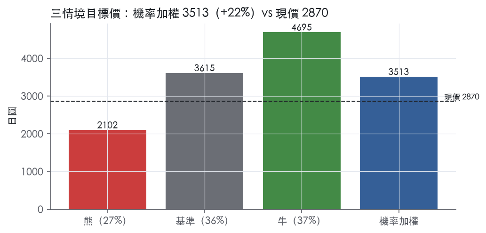
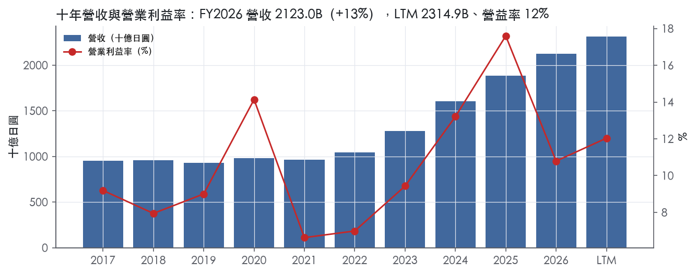
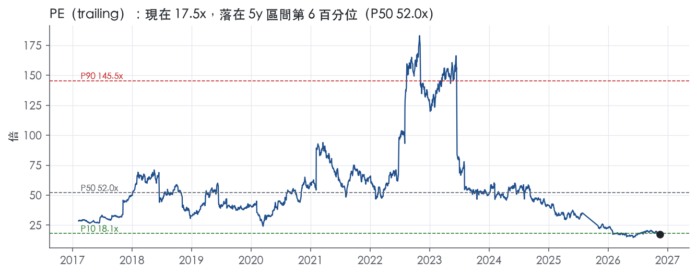
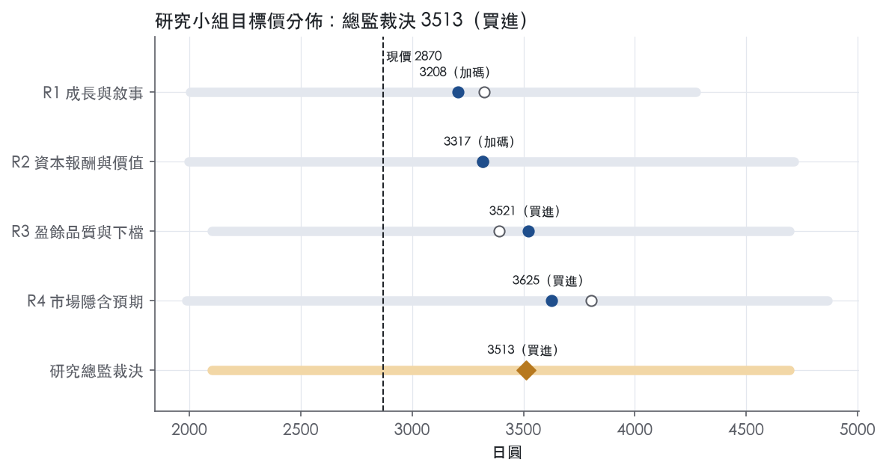
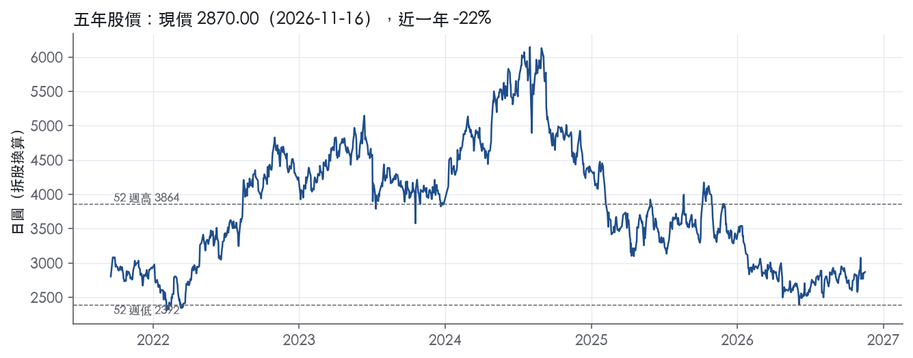

評等總表 › 未分類 › 4568.T
盈餘上修撐報酬，倍數持平，看多｜評等 買進｜目標價 3513
| 報告日 | 評等 | 目標價 | 當時股價 | 超額報酬 |
|---|---|---|---|---|
| 2026-11-16 | 買進 | 3,513 | 2,870 | +17.6% |
| 評等 | 買進（邊界，鄰近加碼） |
| 12 個月目標價 | 3513 日圓 |
| 現價 | 2870.00 日圓（2026-11-16） |
| 預期報酬 | 股價 +22.4%＋股息 3.1%＝總報酬 +25.5%；日股門檻 7.8%，超額 +17.6% |
| 估值方法 | P/E 17.0x，套在第 5–8 季的EPS（也就是一年後的未來四季） |
| 三情境 | 熊 2102／基準 3615／牛 4695 |
| 研究流程 | 四位研究員兩輪辯論＋研究總監裁決 |
| 資料來源 | EDINET、TDnet、J-Quants、Yahoo、FRED（全免費） |
盈餘上修撐報酬，倍數持平，看多（研究總監裁決，四位研究員兩輪辯論後）
評等 買進（邊界，鄰近加碼）｜12 個月目標價 3513 日圓（總監三情境機率加權 3606 與研究員中位數 3419 各半）｜現價 2870.00（2026-11-16）
預期報酬：股價 +22.4%＋股息 3.1%＝總報酬 +25.5%。日股門檻 7.8%，超額 +17.6%，離加碼的分界不到三個百分點，屬邊界評等（落在其他級距的機率約三成）。
估值方法：P/E 17.0x，套在第 5–8 季的EPS（也就是一年後的未來四季）。三情境：熊 2102（27%）／基準 3615（36%）／牛 4695（37%）。
什麼會讓研究總監改變看法：美國 MFN 細則明文納入 Enhertu／Datroway，或 FY2028 期初計畫營業利益低於 400.0B：y2 營益率回 16%、倍數降 15x、轉中性；FY2027 期末存貨回落且 FCF 接近淨利：倍數上調到 19x。
| 過去四季（實際，FY2027Q2） | 未來四季 | 第 5–8 季 | 第 9–12 季 | |
|---|---|---|---|---|
| 營收（B） | 2,314.9B | 2,592.7B | 2,852.0B | 3,051.6B |
| 營收成長 | 17.0% | 12.0% | 10.0% | 7.0% |
| 營業利益率 | 12.0% | 15.0% | 17.0% | 18.5% |
| EPS（日圓） | 163.78 | 170.94 | 212.66 | 247.86 |
| EPS 成長 | 9.5% | 4.4% | 24.4% | 16.5% |
| 每股股息（日圓） | — | 0.00 | 0.00 | 0.00 |
| P/E（現價） | 17.5x | 16.8x | 13.5x | 11.6x |
| 股息殖利率（現價） | 3.1% | — | — | — |
過去四季為申報數字；預測為研究總監的假設、程式計算。倍數與殖利率都用現價計算，用來看現價對應各期獲利的高低。
| 情境 | 機率（歷史） | 故事 | 未來四季營收成長 | 第 5–8 季營益率 | 倍數 | 目標價 | 股價漲跌 |
|---|---|---|---|---|---|---|---|
| 熊 | 27%（25%） | 風險表第 1 條 MFN／IRA 壓美國 ADC 淨價，疊加第 4 條日圓 145（本行上行路徑）與第 3 條 CMO 最低購入義務、研發固定成本去槓桿 | 8.0% | 13.0% | 14.0x | 2102 | -26.8% |
| 基準 | 36%（36%） | 腫瘤放量抵銷舊品流失與日圓 153 逆風，FY2027 超越計畫、FY2028 計畫上修 EPS 水準，倍數持平，報酬來自 EPS 成長與配息 | 12.0% | 17.0% | 17.0x | 3615 | 26.0% |
| 牛 | 37%（40%） | 1L HER2 陽性與早期乳癌放量超計畫、200.0B 成本最適化前段兌現、核心外費用退場、日圓走本行下行路徑 160；2027-05 FY2028 期初計畫觸發 | 15.0% | 18.0% | 20.0x | 4695 | 63.6% |
目標價由程式依研究總監的驅動與倍數計算；機率由研究總監給定。括號內是歷史頻率：把這檔股票過去十年 12 個月報酬的波動形狀，置中在基準情境，結果落在各情境附近的比例。

四位研究員用不同方法各自估值，回應研究總監的質疑後交出第二輪，最後由總監逐點裁決。各研究員的主張見第七章，裁決理由見第八章，完整論證見《研究底稿》。
| 立場（一輪→二輪） | 加權目標價（一輪→二輪） | 評等（一輪→二輪） | 第二輪倍數 | 熊～牛目標價 | |
|---|---|---|---|---|---|
| R1 成長與敘事 | 看多→看多 | 3323→3208 | 加碼→加碼 | 18.0x | 2002～4274 |
| R2 資本報酬與價值 | 中性→看多 | 3317→3317 | 加碼→加碼 | 18.0x | 1998～4716 |
| R3 盈餘品質與下檔 | 中性→看多 | 3390→3521 | 加碼→買進 | 17.0x | 2102～4695 |
| R4 市場隱含預期 | 看多→看多 | 3806→3625 | 買進→買進 | 17.0x | 1988～4864 |
| 研究總監裁決 | 看多 | 3513 | 買進 | 17.0x | 2102～4695 |
目標價由程式依各自的驅動與倍數計算；評等＝機率加權總報酬 − 日股門檻。
第一三共是一家以腫瘤領域ADC（抗體藥物複合體）為成長引擎、持續從學名藥與專科藥業務轉型的全球處方藥公司。公司由母公司與子公司43家、關聯公司1家共45家組成，主要事業內容為醫藥品等的製造銷售。由於集團採單一報告分部，有報明文「報告セグメントが単一であるため、セグメント情報の記載を省略しております」——換言之，正式財報不揭露按產品線或地區的獨立損益，分部規模只能靠決算短信裡的「事業ユニット」口徑拼湊。公司的客戶終端是全球腫瘤科醫師與醫療體系，但商業模式高度依賴兩個跨國藥廠夥伴：與阿斯特捷利康共同開發、共同銷售核心產品Enhertu（T-DXd）與Datroway（Dato-DXd）；與美國默沙東共同開發HER3-DXd、I-DXd、R-DXd三個後續ADC候選藥。FY2026全年營收2,123.05B日圓，LTM（至FY2027Q2）已達2,314.93B日圓，顯示公司仍在明顯加速放量期。
公司研發與商業化資源集中在「5個DXd ADC加Next Wave」戰略，核心財務貢獻集中在腫瘤業務；有報對各業務規模與毛利結構未按分部揭露，10-K（有報）層級的分部財務數字「未揭露」。退而求其次看決算短信的六個內部事業單位（非正式報告分部）：日本事業單位（含創新藥與疫苗）H1 FY2027營收232.70B日圓，較去年同期減少17.20B日圓（-6.9%）；第一三共健康照護單位營收48.30B日圓，增加2.40B日圓（+5.1%）；腫瘤事業單位（含美國第一三共Inc.與歐洲腫瘤產品）營收422.60B日圓，增加149.60B日圓（+54.8%），以當地貨幣計增42.9%（+782百萬日圓，至2,652百萬日圓），是目前成長最快且規模最大的單位；美國利基注射劑子公司American Regent單位營收77.90B日圓，減少18.90B日圓（-19.5%，當地貨幣計-26.3%至489百萬日圓），主因Venofer、Injectafer減收；EU專科業務單位營收149.20B日圓，當地貨幣計減少5百萬歐元（-0.6%），因日圓貶值換算增收12.40B日圓（+9.1%）；ASCA（亞洲、中南美）單位營收142.50B日圓，增加24.60B日圓（+20.9%），主因巴西Enhertu放量。研發投入面，FY2026全年研發費用（IFRS基礎）466.0B日圓，較前期增6.9%，佔營收比重21.9%；H1 FY2027研發費用240.06B日圓，年增10.7%，主因5個DXd ADC與Next Wave臨床加碼。腫瘤單位事實上已是集團單一最大收入來源，公司正把商業組織重新整合以配合這個結構。
公司的通路結構是「國內直營＋海外子公司直營＋授權夥伴共同銷售」三軌並行。日本國內由7家公司負責，含第一三共本體的研發製造銷售、第一三共健康照護的一般用藥、第一三共生物科技的疫苗研發製造；海外由38家公司覆蓋，美國透過控股公司第一三共U.S. Holdings Inc.轄下的第一三共Inc.負責研發銷售，其子公司American Regent Inc.負責注射劑研發製造銷售，歐洲由第一三共歐洲GmbH及其18家集團公司覆蓋，另有中國、台灣、韓國、巴西等地子公司。美國子公司第一三共Inc. FY2026全年營收741.26B日圓、稅前損益為-10.81B日圓、當期淨利14.14B日圓、資本合計688.93B日圓、資產合計1,138.79B日圓，是集團單一最大海外營運體。通路策略上，Enhertu與Datroway在美歐日中等主要市場均由公司與阿斯特捷利康共同推廣，近年持續新增適應症與地區核准以擴大處方覆蓋。公司正在精簡非核心資產：第一三共健康照護公司股權已決議全部轉讓給三得利控股，2026年4月15日簽訂股份轉讓契約，分階段實施，預計於FY2029年度內完成；同時決議於2027年10月1日吸收合併第一三共商業夥伴公司（Business Associe）。另外，公司計劃自2027年4月起設立統一全球新藥商業化組織，一元化管理各地商業活動。這一系列動作指向同一方向：把資源與通路全面讓位給腫瘤ADC，非核心消費保健與學名利基資產逐步剝離。
最近四個季度營收與核心利潤率同步走高，波動主要來自一次性費用與匯率。FY2026Q3（截至2025-12-31）營收558.11B日圓，年增15.1%，營益率16.0%，淨利86.63B日圓；FY2026Q4（截至2026-03-31）營收589.59B日圓，年增13.7%，但營益率驟降至-0.8%，淨利仍有62.28B日圓，顯示當季有明顯一次性費用拖累營業利益；FY2027Q1（截至2026-06-30）營收574.74B日圓，年增21.1%，營益率回升至14.8%，淨利68.64B日圓；FY2027Q2（截至2026-09-30）營收592.49B日圓，年增18.3%，營益率18.3%，淨利82.90B日圓。公司自己揭露的H1 FY2027（2026年4月至9月）累計表現：營收1,167.23B日圓，較去年同期增收191.88B日圓（+19.7%）；核心營業利益221.33B日圓，年增70.64B日圓（+46.9%）；營業利益193.80B日圓，年增49.56B日圓（+34.4%）；稅前中間利益192.86B日圓，年增29.64B日圓（+18.2%）；歸屬母公司中間利益151.53B日圓，年增20.72B日圓（+15.8%）。公司說明增收主因「エンハーツ及びダトロウェイの伸長に加えて、円安の進行による為替影響により、増収となりました」，營收端匯率增收影響73.9B日圓，核心營業利益端匯率增益影響22.7B日圓。公司於2026-10-30重申全年計畫未變，維持2026年7月31日公布的FY2027全年預測：營業利益320.00B日圓、稅前利益334.00B日圓、歸屬母公司淨利251.00B日圓、EPS 137.94日圓。股東回饋方面，公司決議FY2026年度股息擬較FY2025年度78日圓增配22日圓至100日圓，並已於2026-10-30董事會決議中間配息50日圓；另於2025-05-01至2026-03-24期間執行上限200.0B日圓或8,000萬股的庫藏股買回，期間取得的3,145萬股已於2026-06-10全數消除。H1累計淨利已達全年計畫251.00B的約六成（151.53B／251.00B），顯示公司計畫偏保守、下半年達標壓力不大。
公司把自己定義為「Trusted healthcare innovator transforming the lives of people through our science and technology」的2035年願景公司，並以第6期中期經營計畫（FY2026-FY2030）作為通往2030年度目標「サステナブルな社会の発展に貢献する先進的グローバルヘルスケアカンパニー」的路徑。2030年度計數目標為：營收3,000.0B日圓以上、營業利益600.0B日圓以上、EPS 260日圓以上，匯率假設為1日圓兌150日圓、1歐元兌180日圓。第一大戰略支柱是「Be a Global Top 5 Oncology Company by 2035」：以Enhertu及Datroway為核心擴大腫瘤事業，目標2030年度腫瘤領域營收達2,300.0B日圓以上，未來五年內力求20個以上適應症上市，同時提升開發速度（RD Excellence）與商業化能力（Business Excellence），並重構全球供應鏈以確保ADC產品穩定供應。第二支柱是「Identify next BGTs by 2030」：在DXd ADC之外加速ADC深化與其他模式（低分子、核酸、基因治療等）的研發，透過擴充國內外研究據點、AI與數據驅動創藥、開放式創新建立下一代技術生態。第三支柱是全公司Operational Excellence，目標透過AI提升生產力、導入全球統一ERP平台優化採購流程，合計實現200.0B日圓以上的成本最適化，用以支持成長投資與股東回饋，並計畫自2027年4月設立統一全球新藥商業化組織以優化資源配置。股東回饋上，公司新引入累進配息政策，目標各年度調整後DOE維持在10.0%以上，並以庫藏股買回作為輔助工具。整體看，公司2030年目標所用匯率假設（1日圓兌150日圓）明顯強於目前現貨匯率158.23，意味著若日圓維持當前弱勢，近兩年營收與利潤有額外匯率順風，但中期若日圓回升至假設水準，成長引擎將更依賴Enhertu/Datroway放量本身而非匯率。公司過去四季的利潤率波動（FY2026Q4營益率轉負）顯示一次性重組與業務再編費用仍是短期雜訊來源，投資人應緊盯核心營業利益而非IFRS營業利益。整體而言，腫瘤ADC集中度持續提高、非核心消費保健與美國利基注射劑業務逐步淡出，是觀察這家公司股價重估節奏最關鍵的結構性變化。

第一三共的護城河評為窄，趨勢穩定。依據是我們有把握未來 5 年以上 ROIC 仍高於資本成本，但沒有把握撐到 10 年以上。支撐點只有一項，就是自有的 DXd ADC 技術平台。過去十年 ROIC 高於資本成本的紀錄不連續，而且收入集中在 Enhertu 與 Datroway 兩個產品，所以不給寬評級。
優勢來源只有無形資產一類，具體是自有 ADC 平台及其衍生的產品授權與核准。
轉換成本、網路效應、成本優勢、效率規模四類，材料裡沒有證據，因此不列。
數字只部分支持護城河主張：近三年很強，十年紀錄不夠穩。
超額報酬為正，但幅度小、不連續
轉折點在 ADC 放量
利潤率波動大
為什麼仍維持窄
侵蝕風險集中在三處：產品集中、平台後續項目失敗、合作模式分走經濟利益。
目標倍數相對同業建議持平，不給溢價。理由是窄護城河只撐得起 5 年以上的超額報酬，而十年平均 ROIC 只比資本成本高 2.2%，且 8 年中只有 5 年過門檻。現在 P/E 17.5x 已低於 5 年 P10 的 18.1x，反映市場已經下修過去的寬護城河溢價；Next Wave 或新 BGT 出現臨床驗證之前，不建議回到歷史中位數的倍數。
| 指標 | 最新 | 十年平均 | 標準差 | 最低 | 最高 |
|---|---|---|---|---|---|
| ROIC | 17.3% | 12.3% | 6.1% | 5.8% | 24.8% |
| 毛利率 | 68.5% | 68.1% | 5.2% | 60.8% | 78.0% |
| 營業利益率 | 10.8% | 10.5% | 3.3% | 6.6% | 17.6% |
| FCF 利潤率 | -3.4% | 7.4% | 10.3% | -7.1% | 29.7% |
| ROE | 16.9% | 10.0% | 4.6% | 5.1% | 17.9% |
程式計算。資本成本代理值（10 年債＋5%）：10.1%；ROIC 平均減資本成本：2.2%；ROIC 有資料的 8 年中，高於資本成本 5 年。
現金轉換是本季報告最大的疑點：LTM營業現金流／淨利僅0.52倍、自由現金流／淨利僅0.04倍，均落在紅燈區，但近三年平均（1.15倍、0.56倍）與十年平均（1.60倍、0.81倍）仍明顯較高，顯示惡化是近期現象而非長期結構問題。FY2025、FY2026自由現金流分別為-134.03B與-71.35B，連續兩年為負，與同期淨利295.76B、279.73B形成明顯落差（量化底稿年度表）。有報說明FY2026（即2025年4月至2026年3月）資產面「棚卸資産が1,775億円、繰延税金資産が1,603億円、並びに営業債権及びその他の債権が1,220億円それぞれ増加いたしました」，換算即存貨增加177.5B、遞延稅資產增加160.3B、營業債權增加122.0B，三者合計是壓縮營業現金流的主因。營業活動現金流FY2026為77.7B收入（前期為53.8B收入），來自「税引前利益2,634億円、減価償却費及び償却費775億円等の非資金項目の他、ラルドタツグ デルクステカン（R-DXd/DS-6000）の戦略的提携の契約一時金の収入があった一方で、運転資金の増加等がありました」，換算稅前利益263.4B、折舊攤銷77.5B，可見帳列淨利有紮實的非現金項目支撐，但被營運資金增加抵銷。投資活動現金流FY2026轉為148.2B支出（前期為334.2B收入），主因「投資の売却や定期預金の払戻による収入があった一方で、定期預金の預入や設備投資による支出等」，這塊波動主要是定存調度而非經營本質惡化，但FCF口徑仍會把資本支出算進去，造成自由現金流偏低。
FY2026全年核心營業利益360.0B（＋47.1B，＋15.1%），但IFRS營業利益僅229.1B（較前期減少102.8B，－31.0%），公司解釋「当期に製造委託先への損失補償等を一過性の費用に計上したことにより、減益となりました」，這筆製造委外損失補償屬一次性，剔除合理。FY2027中間期（2026年4-9月）核心營業利益221.3B（＋70.6B，＋46.9%），IFRS營業利益193.8B（＋49.6B，＋34.4%），差距主因「EUスペシャルティビジネスユニットの事業再編費用をコア外の費用に計上したこと」，重組費用同樣屬一次性。公司自FY2027起調整核心利益定義，排除項目包括「製品に関する無形資産の償却費」、「リストラクチャリングに伴う損益」、「有形固定資産、無形資産、のれんに係る減損損失」、「損害賠償や和解等に伴う損益」、「買収関連費用」、「為替差損益（2028年３月期から適用）」。其中製造委外損失補償與重組費用可視為真正的一次性項目，但無形資產攤銷費是過去授權／併購帶來的持續性經濟成本，長期估值不應整筆剔除。
淨負債為-180.51B，公司維持淨現金部位。但有息負債規模上升明顯：社債及び借入金（非流動）從FY2026末300,077百萬円（300.1B）增至FY2027中間期末499,927百萬円（499.9B），對應量化底稿季度表總債務同步由300.48B增至500.33B，反映期間曾有一次公司債發行。利息保障倍數LTM為12.1x，遠高於8倍綠燈門檻，付息能力無虞。股東權益結構：資產合計由3,996.3B增至4,258.6B，負債合計由2,312.3B增至2,478.5B，資本合計由1,684.0B增至1,780.1B（決算短信 2026-10-30資產負債表），親會社所有者帰属持分比率41.3%，較前期末下降0.8個百分點，主因發債與庫藏股買回。股東回饋方面，FY2025執行庫藏股取得91.8B（3,146萬股），「取得した全株式を2026年６月10日に消却いたしました」；FY2026年度股息計畫每股100日圓（較前期增配22日圓），並訂定「累進配当及び各年度の調整後DOE10.0％以上」方針，中間配當50日圓已經董事會決議。（股利＋回購）／淨利LTM為47.8%，略低於50%綠燈門檻但仍處合理區間，考量累進配當政策，未來有擴大空間。
估值應以核心（core）營業利益／淨利為基礎，加回製造委外損失補償與事業再編費用等明確一次性項目，但無形資產攤銷費屬真實經濟成本不應全數剔除。鑒於現金轉換連續兩年落後盈餘、自由現金流為負，建議對帳列淨利打一定折扣作為估值安全邊際，直到營運資金周轉回正常化。淨現金部位與12.1x利息保障仍支撐目前倍數不受槓桿限制，但有息負債一年內翻倍（300.1B→499.9B）值得在下次財報確認用途後再評估是否影響資本結構假設；目前P/E 17.5x處於五年區間6.5%分位的低位，顯示市場已部分反映現金品質疑慮與匯率敏感性。
| 項目 | LTM | 近三年 | 十年 | 燈號 | 規則 |
|---|---|---|---|---|---|
| 營業現金流／淨利 | 0.52x | 1.15x | 1.60x | 紅 | ≥1.00x 綠、<0.80x 紅 |
| 自由現金流／淨利 | 0.04x | 0.56x | 0.81x | 紅 | ≥0.90x 綠、<0.60x 紅 |
| 應計比率（(淨利−CFO)／平均總資產） | 3.4% | -0.3% | -1.7% | 黃 | ≤0.0% 綠、>5.0% 紅 |
| SBC／營收 | — | — | — | — | ≤3.0% 綠、>8.0% 紅 |
| 淨負債／EBITDA | -0.50x | -1.28x | -1.38x | 綠 | ≤1.50x 綠、>3.00x 紅 |
| 利息保障倍數（營業利益／利息） | 12.1x | 30.6x | 21.3x | 綠 | ≥8.00x 綠、<3.00x 紅 |
| 稀釋股數年變動 | 0.0% | -1.2% | -1.0% | 黃 | ≤0.0% 綠、>3.0% 紅 |
| （股利＋回購）／淨利 | 47.8% | 39.3% | 52.3% | 黃 | ≥50.0% 綠、<0.0% 紅 |
程式計算；燈號以 LTM（無則近三年平均）判定。
| 風險 | 觸發指標（看什麼數字、在哪裡看） | 對 EPS 的影響方向與粗略幅度 | 未來 12 個月發生機率（高／中／低） | 出處 |
|---|---|---|---|---|
| 美國藥價政策（最惠國待遇、IRA運用見直し）衝擊ADC定價 | 美國政府MFN政策公告、CMS對IRA的運用見直し公告、決算短信每季Oncology單位日圓營收增速 | 負向，Oncology單位H1營收422.60B日圓（+54.8%）是集團成長引擎，一旦美國端定價受限，EPS下修幅度「大」 | 中 | |
| 兩大夥伴（AstraZeneca／Merck）利潤分成與契約條件變動 | 決算短信「販売費及び一般管理費」年增率、AstraZeneca利潤分成占比揭露 | 負向，H1販管費因「アストラゼネカとのプロフィット・シェアの増加」年增96.93B日圓（+26.3%），分成比例若上調將直接壓縮EPS，幅度「中大」 | 中 | |
| ADC製造委外（CMO）最低購買義務與需求預測落差 | CMO契約最低購買量達成率、決算短信「コア外の費用」中是否再出現補償金或事業再編費用 | 負向，若需求不如預期需支付CMO補償金，且H1已因「EUスペシャルティビジネスユニットの事業再編費用」計入コア外費用拖累營業利益（コア營業利益221.33B增益46.9%，但營業利益僅增34.4%），幅度「中」 | 中 | |
| 日圓兌日圓/歐元匯率反轉 | 對比公司2030年度目標假設匯率（1日圓兌150日圓）；決算短信每季「為替影響」揭露金額 | 雙向，H1营收端匯率增收73.9B日圓、核心營業利益端匯率增益22.7B日圓、營業利益端匯率增益20.0B日圓；現行匯率158.23明顯弱於公司假設150，若日圓升值回歸假設區間，上述順風將轉逆風，幅度「中大」 | 中 | |
| 日本國內藥價抑制與主力品牌老化（如利克西亞那Lixiana減收） | ジャパンビジネスユニット每季營收年增率、藥價基準改定公告時點 | 負向，H1ジャパンビジネスユニット營收232.70B日圓，年減17.20B日圓（-6.9%），主因「リクシアナ等の減収影響」，幅度「小中」 | 高 |
美國藥價政策風險排第一，因為它同時命中機率與幅度兩端。公司在有報中明確點名「米国における最恵国待遇薬価政策の導入、これと関連する薬価抑制を目的とした政策動向（インフレ抑制法(IRA)の運用見直しを含む。）、ADC製品を含む米国における販売や収益性に重大な影響を与える可能性がある」。Oncology事業單位（含美國第一三共Inc.與歐洲腫瘤產品）H1營收422.60B日圓，較去年同期增加149.60B日圓（+54.8%），以當地貨幣計增42.9%，達2,652M日圓，已是集團單一最大且成長最快的收入來源，任何美國端定價或關稅政策收緊都會直接打在最大的利潤池上，不是邊際業務的小衝擊。
兩大夥伴利潤分成風險值得單獨列出，因為它是「成本結構」而非「需求端」的風險，且已經在最新一期財報兌現。H1販管費年增96.93B日圓（+26.3%），公司明文原因是「アストラゼネカとのプロフィット・シェアの増加による費用増等」；這代表Enhertu、Datroway銷售愈成功，分給夥伴的利潤比例上升對集團淨利率反而是結構性侵蝕，而非單純一次性費用。
CMO最低購買義務風險是有報明文揭露、但市場較少追蹤的條款風險。有報寫明「CMOとの契約に基づく最低購入義務を充足できない場合には、当社はCMOに対して補償金の支払いの必要が生じる可能性がある」。這條風險在最新財報已經有旁證：H1營業利益年增率（34.4%）明顯低於核心營業利益年增率（46.9%），公司解釋是「当期にEUスペシャルティビジネスユニットの事業再編費用をコア外の費用に計上したこと等」拉低，顯示コア外費用這個「垂圾桶」科目正在頻繁被使用，需要每季盯緊這個落差有沒有擴大。
匯率風險是雙面刃，過去兩期財報明顯受益於日圓貶值，但這同時是最大的反轉風險來源。H1期中平均匯率1日圓兌159.37日圓，較去年同期146.04日圓貶值，帶動營收端增收73.9B日圓、核心營業利益增益22.7B日圓。公司2030年度目標所用匯率假設是1日圓兌150日圓，與目前現貨158.23有明顯落差，意味著現在的獲利有相當部分是匯率順風，一旦日圓走強回到假設區間，EPS會有對應的逆風。
日本國內藥價與主力品牌老化風險機率最高、但幅度相對小。ジャパンビジネスユニットH1營收年減6.9%，公司點名「リクシアナ等の減収影響」，這是日本藥價每兩年改定的結構性壓力，可預期會持續但不會造成單季巨額衝擊。
Seagen專利訴訟雖已於2026年3月終結，但ADC是當前最熱的腫瘤藥物模式，競爭對手（如吉利德、第一三共以外的ADC開發商）針對連接子（linker）或抗體技術提起新一輪專利訴訟的機率不低，公司的風險章節僅籠統提到「訴訟提起等を含め、知的財産権に関するリスクが一層増大する可能性がある」，沒有具體點名潛在對手，投資人應自行追蹤ADC領域的專利訴訟公告。
「コア營業利益」與「營業利益」兩個指標的缺口正在制度化——公司從FY2027起重新定義核心營業利益、把重組損益、減損、和解金、併購費用全部排除在外，這個做法雖然提高了可比性，但也讓市場更容易只看對公司有利的核心數字而忽略IFRS GAAP營業利益端持續出現的「一次性」費用（如EU事業再編費用）；建議每季同時檢查兩個數字的缺口是否擴大，缺口擴大代表實際現金流出的重組/訴訟/减損成本在上升，而非單純會計定義調整。
現價 2870.00 對應 trailing（過去四季）P/E 17.5x、EV/EBITDA 14.0x、EV/EBITA —、EV/Sales 2.2x、FCF 殖利率 0.2%。主要估值倍數 P/E 現在 17.5x，落在5 年區間第 6 百分位（P10／P50／P90 = 18.1x／52.0x／145.5x）。

把程式的機械基準預測放到現價下，市場付的前瞻倍數是：P/E（未來四季） 13.8x、P/E（第 5–8 季） 12.4x。反推 DCF 顯示市價隱含未來五年營收年成長 5.3%（WACC 9.0%、終值成長 3.0%、FCF 利潤率 11.2%，SBC 不加回）。
| 倍數 | 現在 | 5 年 P10 | 5 年 P50 | 5 年 P90 | 現在分位 | 全期 P50 |
|---|---|---|---|---|---|---|
| P/E | 17.5x | 18.1x | 52.0x | 145.5x | 6.5% | 49.8x |
| EV/EBITDA | 13.9x | 14.9x | 34.0x | 60.3x | 8.6% | 32.2x |
| EV/EBITA | 20.4x | — | — | — | — | 29.1x |
| EV/EBIT | 18.1x | 19.8x | 48.9x | 109.8x | 8.8% | 45.4x |
| EV/Sales | 2.2x | 2.3x | 5.3x | 7.1x | 6.7% | 5.0x |
| P/S | 2.3x | 2.4x | 5.6x | 7.4x | 3.9% | 4.7x |
| P/FCF | 407.6x | — | — | — | — | 48.2x |
trailing 倍數（股價 ÷ 過去四季）；分位以每個交易日計算。
（日股同業籃尚未建置：評等門檻用日股絕對門檻＝日本 10 年公債＋股權風險溢酬 5%，見首頁。）
事後實現前瞻倍數帶（P/E，2018-11-21..2025-11-19）：P10／P50／P90 = 22.1x／45.7x／87.2x。它是每個交易日的股價除以之後四季實際實現的指標；一年後，今天的第 5–8 季正是那時的未來四季，所以這條帶是 12 個月目標價的同口徑倍數。因為用的是事後實際而非當時預期，過去成長超乎預期的公司這條帶會偏低。
程式的機械基準（成長率從過去四季年增率三年收斂到 6%、利潤率持平）用 事後實現前瞻 P/E P50 估值得到 10591（269.0%），市場現行前瞻倍數（現價 ÷ 基準 未來四季指標）一年後持平，套在基準 第 5–8 季指標得到 3196。這兩個數字只是參考點，不是本報告的目標價；研究員對這個定價的回應在第七章。
下表是每位研究員第一輪（各自獨立）與第二輪（回應研究總監的質疑後）的結果。目標價全由程式依各自的假設計算。
| 立場（一輪→二輪） | 加權目標價（一輪→二輪） | 評等（一輪→二輪） | 第二輪倍數 | 熊～牛目標價 | |
|---|---|---|---|---|---|
| R1 成長與敘事 | 看多→看多 | 3323→3208 | 加碼→加碼 | 18.0x | 2002～4274 |
| R2 資本報酬與價值 | 中性→看多 | 3317→3317 | 加碼→加碼 | 18.0x | 1998～4716 |
| R3 盈餘品質與下檔 | 中性→看多 | 3390→3521 | 加碼→買進 | 17.0x | 2102～4695 |
| R4 市場隱含預期 | 看多→看多 | 3806→3625 | 買進→買進 | 17.0x | 1988～4864 |
| 研究總監裁決 | 看多 | 3513 | 買進 | 17.0x | 2102～4695 |
目標價由程式依各自的驅動與倍數計算；評等＝機率加權總報酬 − 日股門檻。
分歧度：第一輪 加權目標價 3317～3806（區間＝現價的 17%）· 倍數 16～19x · 立場 看多×2、中性×2；第二輪 加權目標價 3208～3625（區間＝現價的 15%）· 倍數 17～18x · 立場 看多×4（方向一致）。

| 研究員 | 第二輪主張 | 堅持的理由 |
|---|---|---|
| R1 成長與敘事 | 看多，18x 套在未來一年 EPS，營收成長 12%／10%／8%。 | 四地前線乳癌核准把處方高峰放在第二年，成長路徑不改。 |
| R2 資本報酬與價值 | 看多，18x 套在未來一年 EPS，報酬靠盈餘複利與配息。 | 舊倍數中位數已失效，不押倍數回歸；現金缺口來自存貨。 |
| R3 盈餘品質與下檔 | 看多，17x 套在第二年 EPS，品質折價已反映在倍數。 | 一次性費用每年換名目出現，第一年營業利益率只給 15.0%。 |
| R4 市場隱含預期 | 看多，17x 套在第二年 EPS，市場不信的是 EPS 水準。 | FY2027 營業利益會超過計畫 320.00B，第二年營業利益率 17%。 |
每位研究員的逐條回應與完整論證見《研究底稿》（4568.T_研究底稿_2026-11-16.docx）。
| 分歧點 | R1 | R2 | R3 | R4 | 什麼資料會分出勝負 |
|---|---|---|---|---|---|
| 目標倍數與口徑 | 18x eps@ntm，錨 5y P10 18.1x | 18x eps@ntm，錨 1y P50 18.2x | 17x eps@q5_q8，前瞻帶 P10 22.1x 之下 | 17x eps@q5_q8，持平點 13.8x 分母含一次性低稅率 | 2027-05 FY2028 期初計畫公布後，市場對計畫 EPS 付的前瞻倍數 |
| Q5–Q8 營益率 | 17% | 16% | 16% | 17% | FY2028 期初計畫營業利益（2027-05）；FY2027Q4 單季營益率 |
| 稅率 | 22% | 20% | 23% | 23% | FY2027 全年實效稅率（2027-05 短信） |
| Q5–Q8 營收成長 | 10% | 10% | 9% | 11% | Q3 短信（2027-01 下旬）腫瘤 BU 當地貨幣累計增收率；FY2028 營收計畫 |
| 熊情境深度與倍數 | 15x，成長 7／2／0 | 14x，營益率 12.5% 持平 | 14x，MFN＋日圓 145＋固定成本 | 12x，政策同時壓 EPS 與倍數 | 美國 MFN 細則是否納入 Part B 腫瘤藥；CMO 最低購入義務金額揭露 |
一、倍數與口徑：裁 R4（R3 數字相同）。 劇本主尺是 eps@q5_q8，事後實現前瞻帶就是這個口徑，R1、R2 的 18x@ntm 要換算才能比。程式檢查表把 17x 標為高於市場持平倍數 13.8x 達 23%，但 13.8x 的分母是含 15.3% 稅率、16.3% 營益率的基準 NTM EPS 207.90；四位研究員和我都不採信這個分母。換成我裁決的稅率與營益率後，同一現價對應的前瞻倍數方向上高於 13.8x，17x 只是小幅高於持平。R1、R2 把一年後 trailing 釘在現行 17.5x 附近，和 17x 前瞻是同一主張的兩種寫法，缺口在他們沒處理分母稅率。不回到前瞻帶 P10 22.1x 的理由全是個股因素：I-DXd 於 2026-09 自主撤回美國申請、AZ 分潤使販管費增 26.3% 快於營收增 19.7%、FCF 連兩年為負（-134.03B、-71.35B）、有報⑧的 MFN 風險。沒有人用利率壓倍數，符合第 7 條。
二、Q5–Q8 營益率：裁 R4，17%。 FY2027Q2 單季已到 18.3%；H1 核心營業利益 221.33B 與營業利益 193.80B 的差距主要是 27.67B 核心外費用（EU 專科再編），這是 FY2027 的事，不會落在 2027 年 10 月以後的 Q5–Q8。200.0B 成本最適化與 2030 年度營業利益 600.0B 對營收 3,000.0B 的目標指向更高的斜坡。本部門營業利益預測歷來偏低（R2 誤差中位數 -4.8%、總監 -2.4%），R4 是唯一不偏的（+0.2%、勝過基準 74%）。16% 那一邊的證據——「每年都有新名目的一次性費用」（FY2026 CMO 補償、FY2027 EU 再編）——是真的，但我用 y1 15%（低於基準 16.3%）承接它；17% 與核心口徑之間的距離，仍留得下一季 Q4 型一次性費用（-0.8%）。
三、稅率：裁 R3，23%。 基準 15.3% 是 FY2026 淨利 279.73B高於稅前 263.4B、遞延稅資產增 160.3B造成的，不可持續。H1 稅前 192.86B 對淨利 151.53B，全年計畫 334.00B 對 251.00B，計畫隱含的下半年稅負更高；23% 落在兩者之間偏計畫。R2 的 20% 偏向 H1，但 NTM 裡包含那個下半年。
四、Q5–Q8 營收成長：裁 R1，10%。 腫瘤 BU H1 當地貨幣增 41.9%、2026 年 5 到 9 月美歐日中前線乳癌核准把處方高峰放在 y2，這是 R3 的 9% 沒給的；但日本 BU -6.9%、American Regent -19.5%、健康照護讓售（FY2029 內完成）與本行日圓 158→153 的逆風，讓 R4 的 11% 過頭——2030 年營收 3,000.0B 目標是在 150 日圓下設的，不需要 y2 高於 10%。
五、熊情境深度：裁 R3，14x。 R3 把機制寫全：有報⑧ MFN／IRA 壓美國 ADC 淨價（風險表第 1 條）、日圓走本行上行路徑 145（第 4 條）、研發與 CMO 最低購入義務是固定成本（第 3 條，有報①-２）。R4 的 12x 把政策衝擊同時算進營益率和倍數，他自己也承認 E1 與 E4 應相抵，誠實版就是 14x；R1 的 y3 成長 0% 最狠卻配最高倍數 15x，內部不一致。四人熊目標價都落在 1988–2102，對加權價影響小，但決定熊機率的歷史對照。
漂移與總經偏離。 沒有需退回的漂移：R1（-3.5%）、R3（+3.9%）都是背離中位數的修正，分別來自 G2、Q3；R2 數字未動；R4 向中位數靠攏 37%、五條接受四條附證據，倍數 16x→17x 與稅率同時改動、加權價反而由 3806 降到 3625，理由（持平點分母）正是我在分歧一採用的，接受。四人 macro_deviations 皆空；情境匯率牛 160（本行下行路徑）、熊 145（本行上行路徑）、基準 153，對出口型藥廠方向正確，照單接受。
目標倍數 17x，eps@q5_q8。錨：事後實現前瞻帶 P10 22.1x之下，理由見分歧一；程式檢查表會把它標成相對持平倍數 +23%，原因如上。同業：日股同業籃尚未建置（程式註記），護城河章建議對同業持平、不給溢價，17x 不含同業溢價。報酬來源是 EPS 從 NTM 到 Q5–Q8 的成長加 2026 年度（FY2027）100 日圓配息，不是倍數回歸。
基準 36%：上述驅動、17x。牛 37%（取 R3 的牛）：營收成長 15／12／8、營益率 16.5／18／18.5、20x。機制：1L HER2 陽性乳癌併用療法與早期乳癌放量超過計畫、200.0B 成本最適化前段兌現、核心外費用退場、日圓走本行下行路徑 160（機率 28%）；觸發點是 2027-05 中旬 FY2027 決算與 FY2028 期初計畫。20x 仍在前瞻帶 P10 之下，牛不靠回到舊中位數。熊 27%（取 R3 的熊）：營收成長 8／4／3、營益率 13.5／13／13.5、14x，對應風險表第 1 條（MFN／IRA）、第 4 條（日圓 145，本行上行路徑機率 20%）、第 3 條（CMO 最低購入義務固定成本）。
機率來源：以基準為中位數，R3 的牛、熊套在我的基準上，距離與他第二輪相近（程式對照 R3 為 +39%／-38%，歷史落區 37／36／27）；我的基準營益率較高，牛距略短、熊距略長，歷史落區大致仍是 37／36／27，所以直接向歷史靠，牛高於熊——這和本部門過去 22 份全部熊高於牛相反，是刻意修正。沒有偏離歷史 10 個百分點以上的情境。熊側不再往上加的公司特有理由：MFN 風險（有報⑧）已經是近一年 -21.8% 報酬與 5 年 6.5% 分位 P/E 的一部分；牛側不再往上加的理由：I-DXd、HER3-DXd 撤回讓一年內能觸發重估的管線事件變少。
差在盈餘，不在成長：反推 DCF 市價只隱含五年營收成長 5.3%，低於四人與我，但它用的 11.2% FCF 利潤率在 LTM FCF 12.82B下太寬，成長預期並不嚴苛；真正的差距是市場以公司計畫級的 EPS 137.94 定價（現價對它的倍數高於 trailing 17.5x、低於前瞻帶 P10 22.1x），而我們認為 Q5–Q8 營益率 17%、成長 10% 讓 EPS 遠高於計畫水準，倍數大致持平。立場看多，程式以機率加權總報酬減 7.8% 門檻給評等，預期為買進，兩者一致；若評等落在加碼，原因會是門檻而非方向。
現價 2870.00 → 點估目標價 3615 → 機率加權目標價 3606 → 目標價 3513，差距拆成五段：成長順延 +326 日圓（市場現行倍數 13.8x 一年後持平、獲利照機械基準）；倍數差 +740 日圓（總監倍數 17.0x vs 市場持平倍數 13.8x，同一機械基準預測）；盈餘差 -321 日圓（總監預測的第 5–8 季EPS 0.0B vs 機械基準 0.0B，同一倍數）；情境不對稱 -9 日圓（機率加權減點估）；研究小組平均 -94 日圓（總監機率加權 3606 與研究員第二輪中位數 3419 各半）。各段相加等於目標價減現價。本階段未接賣方共識，差距以市場隱含預期為對照。
| 驅動 | 機械基準 | 研究總監 | 差異 |
|---|---|---|---|
| 未來四季營收成長 | 13.3% | 12.0% | -1.3 pp |
| 第 5–8 季營收成長 | 9.7% | 10.0% | +0.3 pp |
| 第 9–12 季營收成長 | 6.0% | 7.0% | +1.0 pp |
| 未來四季營益率 | 16.3% | 15.0% | -1.3 pp |
| 第 5–8 季營益率 | 16.3% | 17.0% | +0.7 pp |
| 第 9–12 季營益率 | 16.3% | 18.5% | +2.2 pp |
| D&A／營收 | 3.6% | 3.6% | ＝ |
| 資本支出／營收 | 6.2% | 7.0% | +0.8 pp |
| SBC／營收 | 0.0% | 0.0% | ＝ |
| 稅率 | 15.3% | 23.0% | +7.7 pp |
| 股數年變動 | -1.8% | -0.5% | +1.3 pp |
研究總監只寫偏移，未寫的沿用基準。
| 期 | 營收 | 成長 | 營益率 | 營業利益 | EBITDA | EBITA | 淨利 | EPS | FCF | 期末淨負債 |
|---|---|---|---|---|---|---|---|---|---|---|
| 未來四季 | 2,592.7B | 12.0% | 15.0% | 388.9B | 483.0B | 388.9B | 310.6B | 170.94 | 223.2B | -260.2B |
| 第 5–8 季 | 2,852.0B | 10.0% | 17.0% | 484.8B | 588.4B | 484.8B | 384.4B | 212.66 | 288.3B | -405.0B |
| 第 9–12 季 | 3,051.6B | 7.0% | 18.5% | 564.6B | 675.3B | 564.6B | 445.8B | 247.86 | 343.0B | -604.4B |
程式依上表的驅動計算；季度用最近四季季節性分攤；不含營運資金變動。
估值方法：P/E 17.0x，套在第 5–8 季的EPS（也就是一年後的未來四季）。研究總監目標倍數的錨：事後實現前瞻帶 P10 22.1x 之下：I-DXd 撤回、AZ 分潤封頂、FCF 連兩年為負、有報⑧ MFN 風險；相對以裁決稅率與營益率計的市場前瞻倍數僅小幅溢價，報酬靠 EPS 成長與配息，不含同業溢價。
計算：EPS（第 5–8 季） 212.66 × 17.0x → 點估目標價 3615（26.0%）；隱含 P/E（未來四季）21.1x、P/E（第 5–8 季）17.0x、EV/EBITDA（第 5–8 季）10.7x、FCF 殖利率（第 5–8 季）4.4%。
總監三情境機率加權目標價 3606，研究員第二輪中位數 3419，兩者各半＝目標價 3513；預期報酬 股價 +22.4%＋股息 3.1%＝總報酬 +25.5%；減評等門檻 7.8%（日股絕對門檻 7.8%（日本 10 年公債 2.84%（2026-11-12）＋股權風險溢酬 5%；日股同業籃尚未建置））＝超額報酬 +17.6% → 評等 買進（超額 >+15% 買進、+5～+15% 加碼、±5% 中立、−5～−15% 減碼、<−15% 賣出）。同一份資料重開研究小組，超額約有正負四個百分點的雜訊（一個標準差，二十檔實測）；以此估計，評等落在其他級距的機率約三成。超額離加碼的分界不到三個百分點，應視為邊界評等。
| 情境 | 機率 | 未來四季成長 | 第 5–8 季成長 | 第 5–8 季營益率 | EPS（第 5–8 季） | 倍數 | 目標價 |
|---|---|---|---|---|---|---|---|
| 熊 | 27% | 8.0% | 4.0% | 13.0% | 150.12 | 14.0x | 2102 |
| 基準 | 36% | 12.0% | 10.0% | 17.0% | 212.66 | 17.0x | 3615 |
| 牛 | 37% | 15.0% | 12.0% | 18.0% | 234.75 | 20.0x | 4695 |
| 主張 | 驗證日 | 看哪個數字 | 門檻 |
|---|---|---|---|
| FY2027 IFRS 營業利益超過公司計畫 320.00B | 2027-05-15 | FY2027 決算短信 営業利益 | >= 340B |
| FY2028 期初計畫顯示盈餘水準上修 | 2027-05-15 | FY2028 業績予想 営業利益 | >= 400.0B |
| 腫瘤事業單位當地貨幣成長未失速 | 2027-02-13 | オンコロジーBU 現地通貨ベース前三季累計増収率 | >= 35% |
| 營運資金不再惡化，存貨增速放緩 | 2027-02-15 | 2026-12 末 棚卸資産 | <= 820B |
| コア外費用未常態化擴大 | 2027-05-15 | FY2027 全年 コア外の費用 | <= 60B |
到期由程式結算（第 5 階段帳本）。
| 期 | 營收 | 成長 | 毛利率 | 營益率 | EBITDA | 淨利 | EPS | CFO | FCF | ROIC | 淨負債 | 稀釋股數 |
|---|---|---|---|---|---|---|---|---|---|---|---|---|
| FY2017 | 955.1B | — | — | 9.2% | — | 53.5B | 26.48 | 136.2B | — | — | — | 2.0B |
| FY2018 | 960.2B | 0.5% | 64.0% | 7.9% | 123.0B | 60.3B | 30.37 | 108.4B | 70.4B | — | -77.1B | 2.0B |
| FY2019 | 929.7B | -3.2% | 60.8% | 9.0% | 129.9B | 93.4B | 47.96 | 92.0B | 25.4B | 7.2% | 17.4B | 1.9B |
| FY2020 | 981.8B | 5.6% | 65.0% | 14.1% | 191.4B | 129.1B | 66.27 | 196.6B | 144.0B | 10.7% | -200.0B | 1.9B |
| FY2021 | 962.5B | -2.0% | 64.9% | 6.6% | 121.2B | 76.0B | 39.11 | 192.2B | 128.1B | 5.8% | -196.7B | 1.9B |
| FY2022 | 1,044.9B | 8.6% | 66.2% | 7.0% | 131.3B | 67.0B | 34.91 | 139.2B | 62.5B | 6.9% | -499.0B | 1.9B |
| FY2023 | 1,278.5B | 22.4% | 71.6% | 9.4% | 188.4B | 109.2B | 56.91 | 114.5B | 47.1B | 10.4% | -298.8B | 1.9B |
| FY2024 | 1,601.7B | 25.3% | 74.1% | 13.2% | 271.2B | 200.7B | 104.62 | 599.3B | 476.5B | 15.7% | -545.5B | 1.9B |
| FY2025 | 1,886.3B | 17.8% | 78.0% | 17.6% | 400.6B | 295.8B | 155.87 | 53.8B | -134.0B | 24.8% | -538.5B | 1.9B |
| FY2026 | 2,123.0B | 12.6% | 68.5% | 10.8% | 306.5B | 279.7B | 151.10 | 77.7B | -71.3B | 17.3% | -149.3B | 1.9B |
EDINET 有價證券報告書 XBRL（舊年度 US GAAP 公司只有經營指標摘要）；每股數據已依拆股換算到現在股數基準。EBITDA 空白＝該年沒有折舊攤銷（舊年度 US GAAP 公司的 EDINET 摘要沒有這一行）。
| 期 | 期末 | 推導 | 營收 | 毛利率 | 營益率 | EBITDA | 淨利 | EPS | CFO | FCF | 現金 | 總債務 |
|---|---|---|---|---|---|---|---|---|---|---|---|---|
| FY2024Q2 | 2023-09-30 | 375.5B | 74.8% | 13.6% | 65.4B | 40.0B | 20.84 | -18.1B | -40.9B | 590.8B | 101.9B | |
| FY2024Q3 | 2023-12-31 | 446.9B | 72.6% | 22.3% | 114.5B | 66.6B | 34.69 | 633.7B | 607.5B | 666.7B | 101.8B | |
| FY2024Q4 | 2024-03-31 | 428.4B | 75.6% | 4.0% | 33.2B | 37.2B | 19.37 | 30.0B | -17.4B | 647.2B | 101.7B | |
| FY2025Q2 | 2024-09-30 | — | — | — | — | — | — | — | — | 707.7B | 101.5B | |
| FY2025Q3 | 2024-12-31 | 484.8B | — | 12.7% | — | 61.9B | 32.79 | 58.3B | 21.5B | 682.1B | 101.5B | |
| FY2025Q4 | 2025-03-31 | 518.7B | — | 16.1% | — | 87.2B | 46.29 | 72.1B | 24.7B | 639.8B | 101.3B | |
| FY2026Q1 | 2025-06-30 | 474.6B | — | 20.4% | — | 85.5B | 46.01 | -36.6B | — | 574.3B | 101.3B | |
| FY2026Q2 | 2025-09-30 | 500.8B | — | 9.5% | — | 45.3B | 24.51 | 8.3B | — | 542.2B | 201.1B | |
| FY2026Q3 | 2025-12-31 | 558.1B | — | 16.0% | — | 86.6B | 46.76 | 80.1B | — | 541.5B | 201.1B | |
| FY2026Q4 | 2026-03-31 | 589.6B | — | -0.8% | — | 62.3B | 33.82 | 25.9B | — | 449.8B | 300.5B | |
| FY2027Q1 | 2026-06-30 | 574.7B | — | 14.8% | — | 68.6B | 37.70 | 20.3B | — | 637.9B | 300.5B | |
| FY2027Q2 | 2026-09-30 | 592.5B | — | 18.3% | — | 82.9B | 45.50 | 30.4B | — | 680.8B | 500.3B |
日本財報是年初至今的累計數：單季＝累計相減（Q2＝6 個月−3 個月、Q4＝年度−9 個月）；第 1、3 季多半不揭露現金流量表，單季現金流常空白，LTM 現金流用半年度拼。

本報告由 equity-desk 多代理系統產出，建置中版本，僅供內部研究與方法驗證，不構成投資建議。所有數字以 datapack.json 為準。